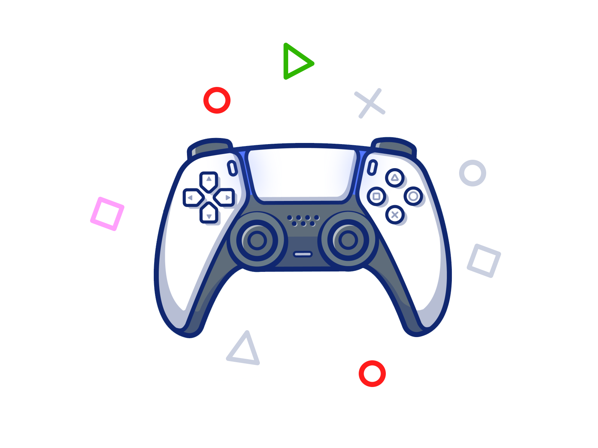

Soccer is a game that unites us both physically and digitally
introducing the "40th" and last FIFA game: FIFA 23
Better and more loved than its predecessor but "slower" in gameplay this game
takes soccer to a whole other level.
This game is playable on multiple platforms this includes "Playstation", "Xbox" and even on the
Nintendo Switch.
Make goals with all-new 'Power shots' and power your way threw the compitition!
Enjoy the last "FIFA" game that will be made by "EA & FIFA" together afterwards they'll go their own ways.
Though don't worry even if FIFA leaves a new game is already in progress.
introducing..."EA Sports FC"! an all-new soccer game.
But till it comes out enjoy the FIFA 23 and what it has to offer.
The EA & FIFA would be very greatfull.